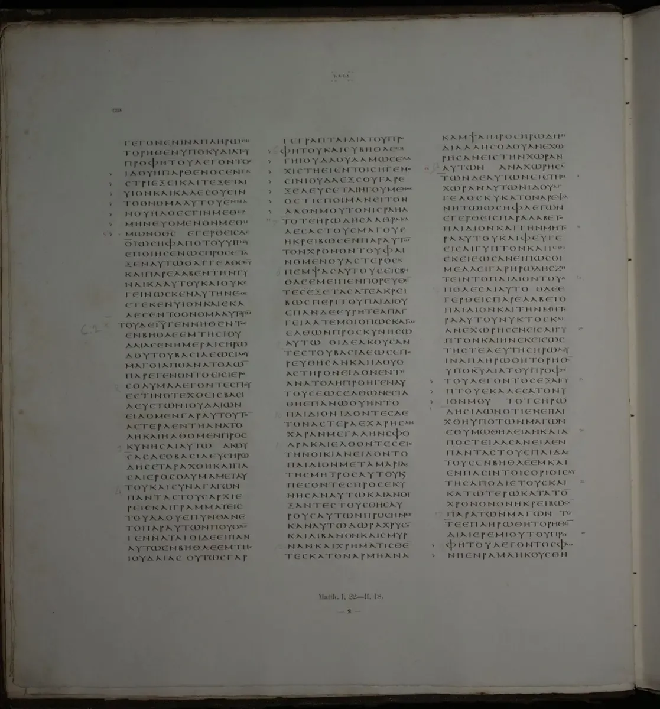
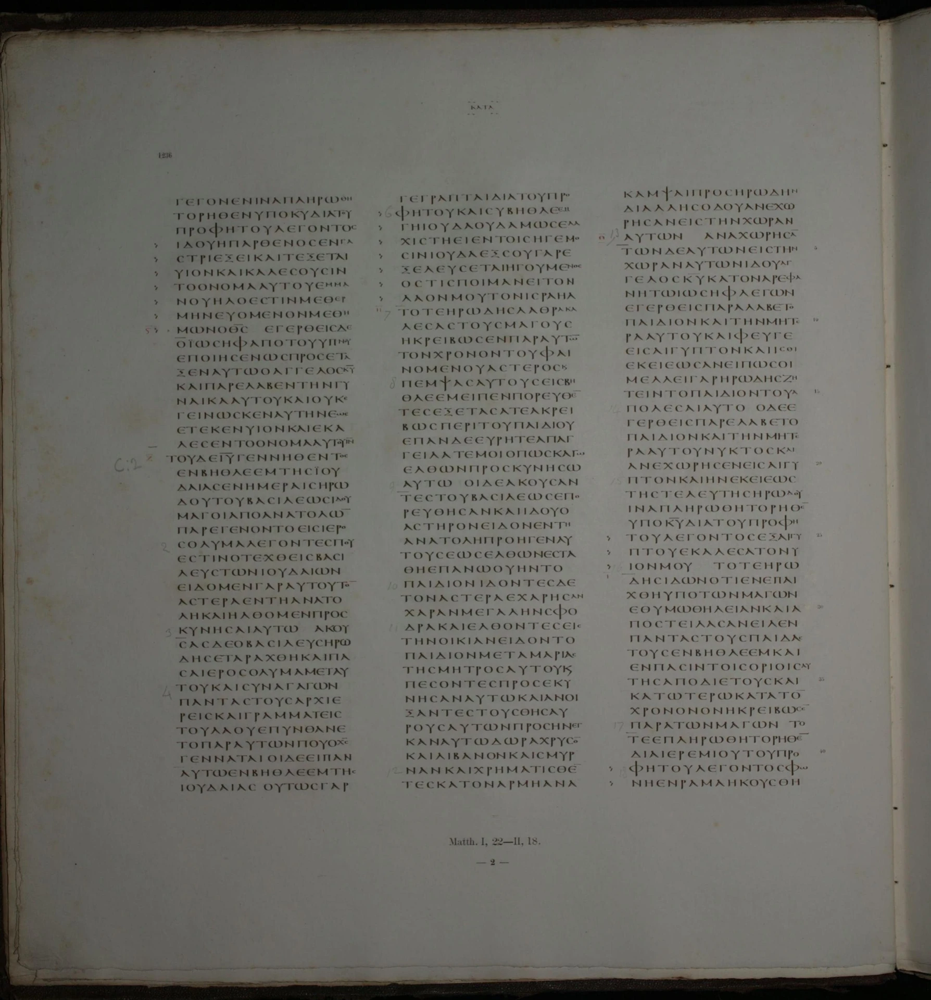
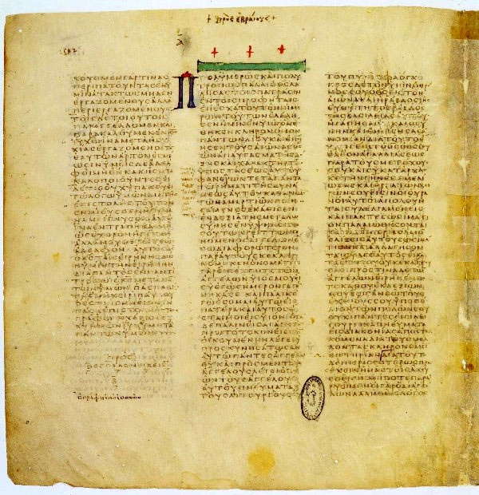
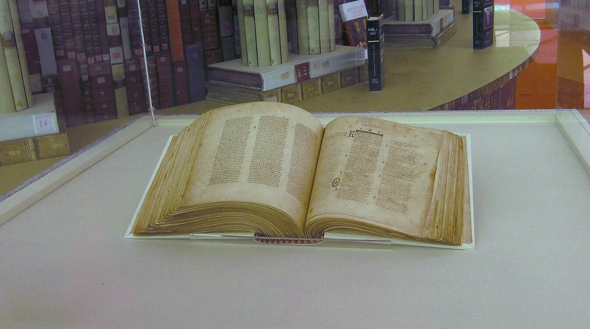

아직 펼치지 않은 카드가장 오래된 성경을 찾아서 · 3바티칸 사본1,600년 넘은 성경의 여백에 누군가 화난 메모를 남겼어요. 무엇 때문에 화가 났을까요?옛날 성경 옆에 ‘고치지 마!’라고 쓴 메모가 있대!
4세기 ~ 오늘로마 바티칸 도서관 · 그리스어 사본 1209번
바티칸 사본
바티칸 도서관의 그리스어 사본 1209번에는 1,600년 동안 여러 사람의 손길이 겹쳐 있어요. 4세기 필경사의 글씨 위에 훗날 덧쓴 먹, 여백의 메모, 옅은 숫자까지. 마태복음 한 쪽을 가까이 들여다보며 하나씩 찾아보세요.
아주아주 오래된 성경 한 쪽에 여러 사람이 남긴 표시가 숨어 있대. 같이 찾아볼까?
검수 전 시안이에요(기준서 1판). 찾아보기의 마태복음 쪽은 사본을 사진으로 찍어 펴낸 옛 사진판(영인본)의 한 장이에요. 글씨를 덧쓴 때와 여백의 두 점을 찍은 때는 학자마다 의견이 달라 ‘기록마다 다른 점’에 적었어요. 상상은 ‘눈 감고 상상해 보기’에만 썼어요.
시안 확인용카드 단계 미리 보기
1
그리스어 사본 1209번
로마 바티칸 도서관에는 ‘그리스어 사본 1209번’이라는 번호가 붙은 성경이 있어요. 4세기에 그리스어로 쓴 성경으로, 구약 칠십인역과 신약이 한 권에 담겼어요.
이 사본이 기록으로 처음 확인되는 것은 15세기 바티칸 도서관의 목록이에요. 그보다 앞서 어디서 쓰였는지는 학자마다 의견이 달라요(아래 ‘기록마다 다른 점’).
1587년 교황 식스토 5세 때 로마에서 펴낸 칠십인역은 바로 이 사본을 바탕으로 만들었어요. 같은 묶음의 칠십인역 카드 앞면 그림이 그 책의 첫 장이에요.
로마의 아주 큰 도서관에 1,600년 넘은 성경이 있어.
물어보기1,600년 동안 책을 잘 지키려면 어떻게 해야 할까?
2
한 쪽에 겹친 여러 손
앞면의 마태복음 쪽을 크게 펼쳤어요. 4세기 필경사는 이 쪽에 세 단, 단마다 42줄을 낱말 사이도 띄우지 않고 이어 썼어요. 필경사는 책을 손으로 베껴 쓰는 사람이에요.
그 위에 1,600년 동안 다른 손들이 표시를 더했어요. 번호가 붙은 곳을 하나씩 눌러 보세요.
번호가 붙은 곳을 하나씩 눌러 보세요. 고른 곳은 ‘가까이 보기’로 크게 볼 수 있어요.

바티칸 사본의 마태복음 1장 22절~2장 18절 쪽 · 옛 사진판(영인본) · 퍼블릭 도메인 · 위키미디어 공용
그림 위의 숫자나 아래 번호를 눌러 보세요.
일곱 곳을 다 찾았어요. 4세기 필경사부터 훗날의 옅은 숫자까지, 한 쪽에 여러 시대의 손이 겹쳐 있어요.
이 그림은 사본을 사진으로 찍어 책으로 펴낸 옛 사진판(영인본)의 한 장이에요. 맨 아래 ‘Matth. I, 22—II, 18.’은 그 책을 만든 사람들이 붙인 설명이에요.
오래된 성경 쪽에 숨은 표시를 찾아보자!
물어보기하나님 이름을 왜 짧게 줄이고 줄을 그었을까?
3
여백의 한마디
히브리서 1장 3절에서 이 사본은 다른 사본들과 한 낱말이 달라요. 다른 사본들은 아들이 능력의 말씀으로 만물을 ‘붙드신다(페론)’고 쓰는데, 이 사본은 ‘드러내신다(파네론)’고 적었어요.
훗날 누군가 이 낱말을 다른 사본들처럼 고쳐 놓았어요. 그것을 본 또 다른 사람이 가운데 단 왼쪽 여백에 몇 줄을 적었어요.

“어리석고 못된 사람아, 옛 글을 그대로 두어라. 고치지 마라!”
바티칸 사본 1512쪽 여백, 히브리서 1장 3절 옆 · 그리스어를 이 안내서가 우리말로 옮김
메모를 누가 언제 적었는지는 알려져 있지 않아요. 지금 이 쪽에서 읽히는 낱말은 옛 낱말 ‘파네론’이에요.
이 사본을 읽던 사람이 되어, 히브리서 1장 3절에서 누군가 고쳐 놓은 낱말을 보았어요. 어떻게 할까요?
누가 글자를 바꿔 놓았더니, 다른 사람이 ‘바꾸지 마!’ 하고 적어 놨대.
물어보기내가 쓴 글을 누가 몰래 고치면 어떤 마음이 들까?
4
파리에 다녀온 사본
나폴레옹 때 이 사본은 전리품으로 파리에 옮겨졌어요. 그곳에서 독일 학자 후크가 사본을 살펴보고, 1810년 ‘바티칸 사본의 오래됨에 대하여’라는 글을 펴냈어요. 사본은 1815년 로마로 돌아왔어요.
그 뒤에도 도서관은 이 사본을 아주 조심스럽게 지켰어요. 1843년 독일 학자 티셴도르프는 몇 구절만 본떠 베낄 수 있었어요.

1889~1890년에는 모든 쪽을 사진으로 찍은 영인본이 세 권으로 나왔고, 1999년에는 실물 크기의 컬러 영인본도 나왔어요. 영인본은 옛 책을 사진으로 찍어 그대로 다시 펴낸 책이에요. 사진은 2015년 바르샤바의 한 박람회에 놓인 영인본이에요.
이 성경은 프랑스 파리에 갔다가 다시 돌아왔대.
물어보기보물 같은 책을 모두가 보게 하려면 어떻게 하면 좋을까?
눈 감고 상상해 보기
서늘한 방에 큰 양피지 책이 펼쳐져 있어요. 누군가 바랜 글자 위로 펜을 천천히 움직여요. 한 글자, 또 한 글자. 틀렸다고 여긴 글자 앞에서는 펜이 잠시 멈춰요. 여백에서는 오래전 누군가 남긴 화난 메모가 조용히 그를 지켜봐요.
눈을 감아 봐. 조용한 방에 큰 책이 펼쳐져 있어. 누가 흐린 글씨를 한 자씩 따라 쓰고 있어. 사각사각.
나의 자리
누군가의 말을 전할 때, 내 생각을 슬쩍 보태고 싶어진 적이 있나요?
친구 말을 전할 때 내 말을 보탠 적 있어?
마음에 닿는 한 줄을 고르거나 직접 써 보세요. 한 줄을 남기면 이 자리의 도장이 찍혀요. 이 기기에만 저장돼요.
더 깊이
궁금한 칸만 펼쳐 읽어도 괜찮아요.
알고 보면
양피지 짐승 가죽을 얇게 펴고 말려 만든 글씨 재료예요. 이 사본은 가로세로 27센티미터쯤 되는 네모난 양피지 759장이 남아 있어요.
B와 03 학자들은 이 사본을 짧게 ‘B’ 또는 ‘03’이라고 불러요. 대문자로 쓴 옛 사본들에 알파벳과 번호를 붙여 부르는 방식이에요.
거룩한 이름 줄여 쓰기 하나님(ΘC), 주(ΚC), 예수(ΙC)처럼 첫 글자와 끝 글자 위에 줄을 긋는 방식은 2세기 무렵의 그리스도인 기록부터 꾸준히 보여요.
쪽 번호 여백에 메모가 남은 히브리서 첫 쪽은 1512쪽이에요. 쪽 번호가 이렇게 큰 것은 구약 전체가 앞에 먼저 실려 있어서예요.
기록마다 다른 점
어디서 썼을까 이집트에서 썼다는 생각이 가장 흔하지만, 로마나 소아시아라는 학자도 있었어요. 영국 학자 스키트는 콘스탄티누스 황제가 주문한 성경 50권 가운데 하나일지 모른다고 봤어요.
글씨는 언제 덧썼을까 바티칸 도서관은 바랜 글씨를 10~11세기에 한 번, 16세기에 또 한 번 덧썼다고 설명해요. 그런데 2022~2023년 잉크를 분석한 연구자 이라 라빈은 처음 덧쓴 일이 이미 고대에 있었다고 봤어요.
여백의 두 점은 언제 찍었을까 신약 여백 곳곳에 두 점(디스티그메)이 800개쯤 찍혀 있어요. 1995년 필립 페인은 사본마다 글이 다른 곳을 알리는 4세기의 표시라고 봤고, 16세기에 찍었다는 학자들도 있어요. 2022~2023년 잉크 분석에서는 조사한 두 점이 16세기보다 이를 수 없다는 결과가 나왔지만, 페인은 이에 반대해요.
함께 읽는 말씀
말씀은 뜻만 옮기고, 본문은 대한성서공회 개역개정으로 이어 드려요.
히브리서 1장 3절 아들이 능력의 말씀으로 만물을 붙드신다는 구절이에요. 이 사본만 ‘드러내신다’로 적었고, 여백의 메모가 바로 이 구절 옆에 있어요.
마태복음 2장 찾아보기의 쪽에 적힌 이야기예요. 동방 박사들, 베들레헴, 이집트로 피한 일이 이어져요.
미가 5장 2절 마태복음 2장 6절이 옮긴 베들레헴 예언이에요. 사본에서는 꺾쇠가 붙은 줄로 보여요.
직접 가 보기 · 집에서 보기
확인한 날 · 2026년 11월 18일 · 바뀌기 쉬운 정보라 정기적으로 다시 확인해요
실물은 바티칸 도서관에 있어 일반 관람은 어려워요. 대신 도서관 누리집(DigiVatLib)에서 이 사본의 모든 쪽 사진을 개인 공부용으로 볼 수 있어요.
마태복음은 신약 맨 앞이라 금방 찾을 수 있고, 여백의 메모는 1512쪽 가운데 단 왼쪽에 있어요.
일곱 곳의 손길 금박
마태복음 쪽에서 일곱 곳을 모두 찾아 읽으면 카드에 금박이 입혀져요.
찾아보기의 일곱 곳을 모두 눌러 읽기
여백 앞에서 채색
둘 가운데 하나만 해도 카드가 채색돼요.
히브리서 1장 3절의 고쳐진 낱말을 본 사람이 되어 고르기
아이와 함께 ‘영화처럼 보기’를 끝까지 보기
근거 보기 (9)
- 바티칸 도서관, Greek Paleography(T. Janz): Biblical majuscule — Vat. gr. 1209의 글씨, 바랜 글씨를 한 자씩 두 번 덧씀(10~11세기, 16세기), 틀렸다고 여긴 글자·낱말은 건너뜀, 지금 보이는 글씨는 16세기의 덧쓴 글씨
- Catholic Encyclopedia(1908): Codex Vaticanus — 세 단, 바랜 글씨를 덧쓴 셋째 손, 15세기 도서관 목록, 1587년 로마판 칠십인역의 바탕, 나폴레옹·파리·후크, 쓴 곳에 대한 여러 의견(로마·소아시아·이집트)
- Catholic Encyclopedia(1910): Johann Leonhard Hug — De antiquitate Codicis Vaticani commentatio(프라이부르크, 1810)
- Wikipedia: Codex Vaticanus — 길잡이(759장·27×27cm, 신약 42줄, 꺾쇠로 표시한 구약 인용, 거룩한 이름 줄임, 히브리서 1:3 φανερων/φερων과 1512쪽 메모, 1475·1481년 목록, 1815년 반환, 1843년 티셴도르프, 디스티그메 약 795개, 1889~90·1999년 영인본)
- Tim Finney, The text of Hebrews(2023 강의) — 바티칸 사본 350년 무렵, 히브리서 메모 원문과 뜻(옛 글을 그대로 두어라), 스키트의 콘스탄티누스 성경 50권 생각
- Evangelical Textual Criticism(T. Wasserman, 2023): Distigmai revisited — 페인(1995)의 4세기설과 16세기설, 2022~2023년 잉크 분석(두 점은 16세기보다 이를 수 없음), 라빈: 덧쓴 일은 이미 고대에
- Wikipedia: Nomina sacra — 길잡이(첫 글자와 끝 글자 위에 줄, ΘΣ·ΚΣ·ΙΣ, 2세기 무렵의 기록부터)
- Wikipedia: Chapters and verses of the Bible — 길잡이(장 나누기 1205년 무렵 랭턴, 신약 절 번호 1551년 에스티엔)
- DigiVatLib: Vat.gr.1209 — 바티칸 도서관 누리집의 사본 사진 보기(개인 공부용)
그림·사진·소리 출처
‘처음 만나는 기독교 문화’의 깊은 카드예요. 실제 인물의 사진은 쓰지 않았어요. 카드 단계와 남긴 글은 이 기기에만 저장돼요.